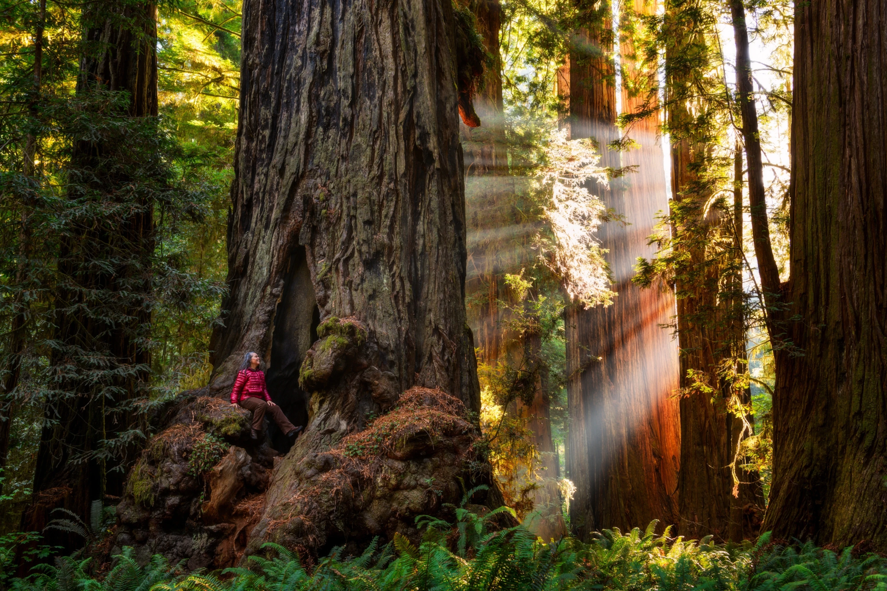

Redwood National and State Parks, located along the northern California coast, are a testament to the grandeur and beauty of nature. These parks are home to some of the tallest and oldest trees on Earth, the magnificent coast redwoods.
Walking among the towering redwoods is an awe-inspiring experience. The sheer size and majesty of these ancient giants will leave you speechless. As you wander through the dense forest, you'll be immersed in a tranquil and magical atmosphere, surrounded by the scent of damp earth and the whispering of the leaves.
The parks offer a variety of trails for all levels of hikers, allowing you to explore the diverse ecosystems and discover hidden gems along the way. From short nature walks to longer backpacking adventures, there's something for everyone to enjoy. Don't miss the opportunity to hike through the famous Fern Canyon, a lush and verdant gorge adorned with ferns and moss-covered walls.
The parks are not just about the redwoods; they also encompass a stunning coastline. Take a scenic drive along the Coastal Drive or hike to one of the pristine beaches to witness the dramatic meeting of towering trees and crashing waves. Breathe in the fresh sea air and soak in the breathtaking views as you admire the rugged beauty of the coastline.
Redwood National and State Parks are not only a haven for nature lovers but also a sanctuary for wildlife. Keep your eyes peeled for glimpses of Roosevelt elk, black bears, and numerous bird species that call these parks home. The parks are teeming with life, and each visit offers the chance to spot unique and fascinating creatures.
Camping is a popular option for those looking to immerse themselves fully in the natural splendor of the parks. Several campgrounds are available, allowing you to spend peaceful nights under the towering redwoods and wake up to the sounds of nature. Make sure to check the park's regulations and plan your camping trip in advance.
Redwood National and State Parks are not just a destination for outdoor enthusiasts but also a place of reflection and reverence. Standing amidst these ancient trees, you can't help but feel a sense of humility and appreciation for the beauty and resilience of nature. It's a place to reconnect with the natural world and find solace in its tranquility.